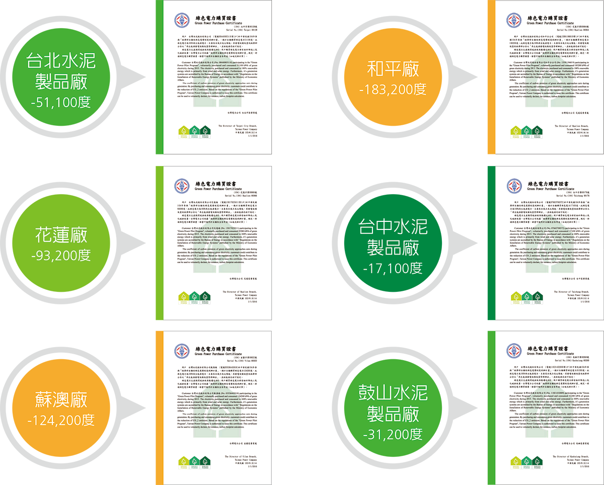

環境管理政策及投入
策略與願景：環保是責任不是成本
台泥－水泥業領航者，矢志從產品價值鏈之完整構面推動節能和環保，將水泥業打造成嶄新的綠色產業。台泥堅信環保與經濟發展應可相輔相成，構成提升社會生活品質的良性循環。因此，在促進經營管理的同時，不斷積極投入環保改善工作，將節能、環保納入生產流程的重要考量，遵循循環型經濟策略，致力於降低單位能源消耗量、減少廢棄物等措施。「高生產力、高顧客滿意、高創新、高合作、高文化、高國際化」是台泥的六大發展方向，結合環保經濟與社會環境脈動，推動「提升競爭力、資源再利用極大化、降低單位能源消耗量、減少廢棄物、利用水泥窯協助其他企業處理廢棄物」等改善主軸，期望達到永續經營的目標。
管理體系建立
聯合國政府氣候變遷小組說明溫室氣體排放是造成地球氣候變遷的主因，台泥體認身為地球村一員，致力於溫室氣體減量。近20年來，從開發綠色產品到導入綠色管理系統，將綠色管理觀念融於企業營運之中，台泥3座水泥廠自1997年起陸續通過ISO 14000環境管理系統驗證、ISO 14064 Part I溫室氣體排放量盤查與驗證。2014年底蘇澳廠、和平廠、花蓮廠均通過ISO 50001能源管理系統驗證，為水泥業首創，持續提升能源管理成效。
由於水泥生產製程耗費較多能源，因此台泥持續研發新技術及投入新設備改善製程，以提升能源使用效率，促進環境永續發展。為確實掌握內部能源使用狀況，透過能源管理系統，將耗能管控標準化，以持續改善之精神，設定節能目標、改善計畫，定期審視執行成果，同時宣導節能減排觀念，以及採用具有節能效用之設備。
環保推動重點
- 加強設備操作管理、人員訓練、檢查維修工作及改善收塵系統，使能確保所有環保設備正常運作
- 加強環境清掃及廢水處理與排放之控管，嚴控廢棄物處理程序及加強委外承攬商管理，機動清洗車輛輪胎，綠化廠區環境
- 進行空氣污染及水污染防制設備的汰舊更新與必要之增設，降低對環境污染
- 持續推動資源整合，減少天然礦物之資源使用，協助電子產業、電廠、紙業、淨水廠等處理相關事業廢棄物，盡企業最大資源再利用，以達減排之責任
環保投入
台泥為減少對環境的污染，過去已投入新台幣16億元之鉅資，進行環保設備之汰舊換新及增設工程。近年來每年均持續編列預算，進行現有設備維護與效能提升。此外，2015年「經濟部自願性綠色電價制度試辦計畫」自2月16日正式開放認購，台泥響應國家發展綠能，加入「經濟部自願性綠色電價制度試辦計畫」，認購綠電共50萬度。2015年環保相關之各項投資與費用為54,542,499元，下表為歷年來之環保支出金額。由於2013年台北廠轄下各分廠進行一次水污染防治砂石回收設備或沉澱池設施的更新或新設、露天堆場增設頂棚，2014年與2015年無該等一次性更新與新設投資；另和平水泥廠產量減少，維護性環保備件因之減少使用，故環保投入金額有遞減情形。
